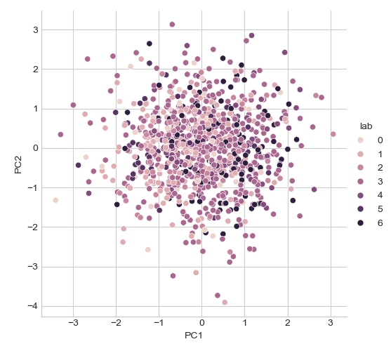
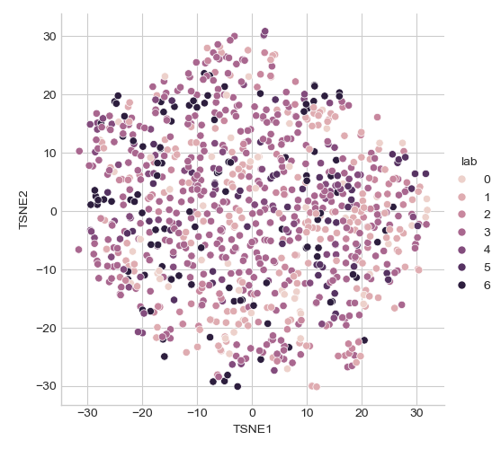
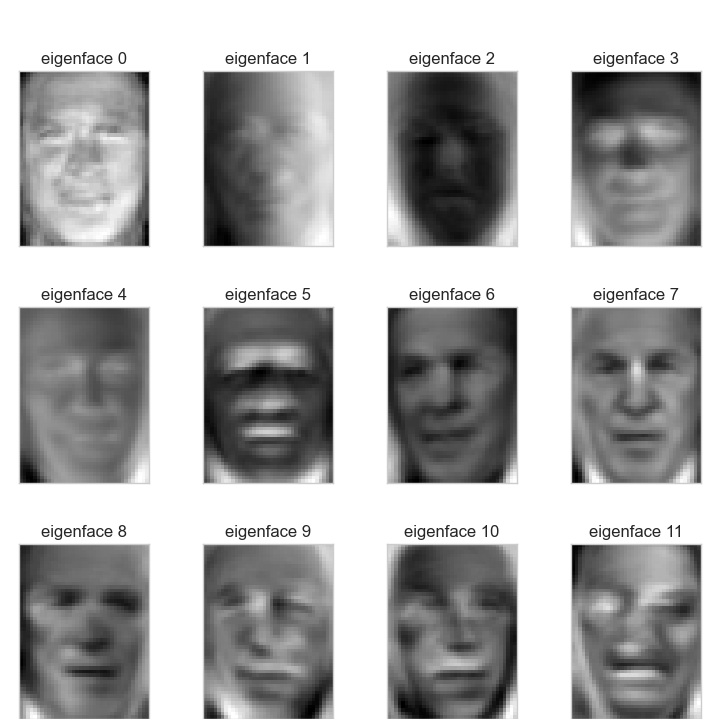
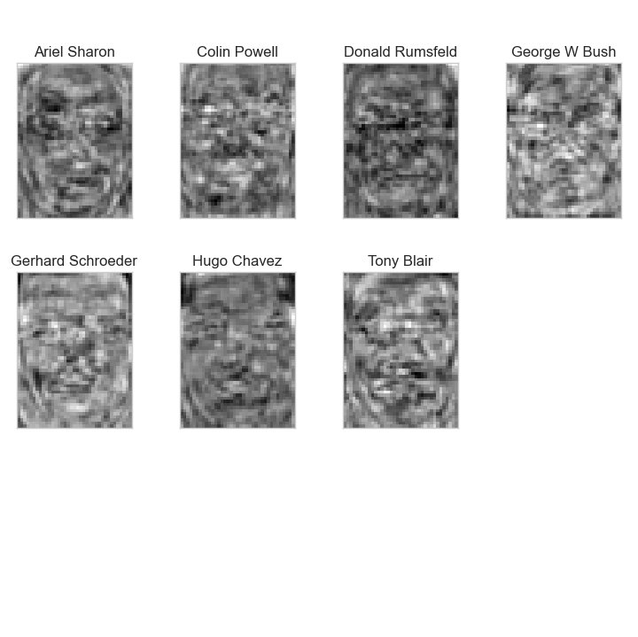
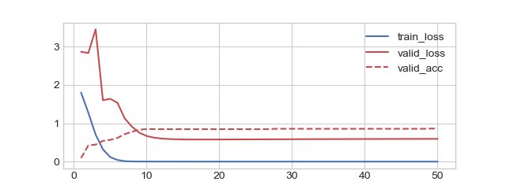

Note
Go to the end to download the full example code.
Hands-On: Faces recognition using various learning models¶
This lab is inspired by a scikit-learn lab: Faces recognition example using eigenfaces and SVMs
It uses scikit-learan and pytorch models using skorch (slides).
skorch provides scikit-learn compatible neural network library that wraps PyTorch.
skorch abstracts away the training loop, making a lot of boilerplate code obsolete. A simple net.fit(X, y) is enough.
Note that more sophisticated models can be used, see for a overview.
Models:
Eigenfaces unsupervised exploratory analysis.
LogisticRegression with L2 regularization (includes model selection with 5CV`_
SVM-RBF (includes model selection with 5CV.
MLP using sklearn using sklearn (includes model selection with 5CV)
Basic Convnet (ResNet18) using skorch.
Pretrained ResNet18 using skorch.
Pipelines:
Univariate feature filtering (Anova) with Logistic-L2
PCA with LogisticRegression with L2 regularization
import numpy as np
from time import time
import pandas as pd
# Plot
import matplotlib.pyplot as plt
import seaborn as sns
# Plot parameters
plt.style.use('seaborn-v0_8-whitegrid')
fig_w, fig_h = plt.rcParams.get('figure.figsize')
plt.rcParams['figure.figsize'] = (fig_w, fig_h * .5)
# ML
from sklearn.model_selection import train_test_split
from sklearn.model_selection import GridSearchCV
from sklearn.metrics import classification_report
from sklearn.metrics import confusion_matrix
# Preprocesing
from sklearn import preprocessing
from sklearn.pipeline import make_pipeline
from sklearn.pipeline import Pipeline
from sklearn.feature_selection import SelectKBest, f_classif
# Dataset
from sklearn.datasets import fetch_lfw_people
# Models
from sklearn.decomposition import PCA
import sklearn.manifold as manifold
import sklearn.linear_model as lm
import sklearn.svm as svm
from sklearn.neural_network import MLPClassifier
# from sklearn.ensemble import RandomForestClassifier
# from sklearn.ensemble import GradientBoostingClassifier
# Pytorch Models
import torch
import torchvision
import torch.nn as nn
import torch.nn.functional as F
from skorch import NeuralNetClassifier
import skorch
# Use [skorch](https://github.com/skorch-dev/skorch). Install:
# `conda install -c conda-forge skorch`
device = torch.device('cuda' if torch.cuda.is_available() else 'cpu')
Utils¶
def plot_gallery(images, titles, h, w, n_row=3, n_col=4):
"""Plot a gallery of portraits."""
plt.figure(figsize=(1.8 * n_col, 2.4 * n_row))
plt.subplots_adjust(bottom=0, left=.01, right=.99, top=.90, hspace=.35)
for i in range(min(images.shape[0], n_row * n_col)):
plt.subplot(n_row, n_col, i + 1)
plt.imshow(images[i].reshape((h, w)), cmap=plt.cm.gray)
plt.title(titles[i], size=12)
plt.xticks(())
plt.yticks(())
def title(y_pred, y_test, target_names, i):
"""Plot the result of the prediction on a portion of the test set."""
pred_name = target_names[y_pred[i]].rsplit(' ', 1)[-1]
true_name = target_names[y_test[i]].rsplit(' ', 1)[-1]
return 'predicted: %s\ntrue: %s' % (pred_name, true_name)
def label_proportion(x, decimals=2):
"""Labels's proportions."""
unique, counts = np.unique(x, return_counts=True)
return dict(zip(unique, np.round(counts / len(x), decimals)))
Download the data¶
lfw_people = fetch_lfw_people(min_faces_per_person=70, resize=0.4)
# introspect the images arrays to find the shapes (for plotting)
n_samples, h, w = lfw_people.images.shape
# for machine learning we use the 2 data directly (as relative pixel
# positions info is ignored by this model)
X = lfw_people.data
n_features = X.shape[1]
# the label to predict is the id of the person
y = lfw_people.target
target_names = lfw_people.target_names
n_classes = target_names.shape[0]
print("Total dataset size:")
print("n_samples: %d" % n_samples)
print("n_features: %d" % n_features)
print("n_classes: %d" % n_classes)
Total dataset size:
n_samples: 1288
n_features: 1850
n_classes: 7
Split into a training and testing set in stratified way¶
X_train, X_test, y_train, y_test = train_test_split(
X, y, test_size=0.25, random_state=1, stratify=y)
print({target_names[lab]: prop for lab, prop in
label_proportion(y_train).items()})
{np.str_('Ariel Sharon'): np.float64(0.06), np.str_('Colin Powell'): np.float64(0.18), np.str_('Donald Rumsfeld'): np.float64(0.09), np.str_('George W Bush'): np.float64(0.41), np.str_('Gerhard Schroeder'): np.float64(0.08), np.str_('Hugo Chavez'): np.float64(0.05), np.str_('Tony Blair'): np.float64(0.11)}
Plot mean faces and 4 samples of each individual
single_faces = [X_train[y_train == lab][:5] for lab in np.unique(y_train)]
single_faces = np.vstack(single_faces).reshape((5 * n_classes, h, w))
mean_faces = [X_train[y_train == lab].mean(axis=0) for lab in
np.unique(y_train)]
mean_faces = np.vstack(mean_faces).reshape((n_classes, h, w))
single_faces[::5, :, :] = mean_faces
titles = [n for name in target_names for n in [name] * 5]
plot_gallery(single_faces, titles, h, w, n_row=n_classes, n_col=5)
![Ariel Sharon, Ariel Sharon, Ariel Sharon, Ariel Sharon, Ariel Sharon, Colin Powell, Colin Powell, Colin Powell, Colin Powell, Colin Powell, Donald Rumsfeld, Donald Rumsfeld, Donald Rumsfeld, Donald Rumsfeld, Donald Rumsfeld, George W Bush, George W Bush, George W Bush, George W Bush, George W Bush, Gerhard Schroeder, Gerhard Schroeder, Gerhard Schroeder, Gerhard Schroeder, Gerhard Schroeder, Hugo Chavez, Hugo Chavez, Hugo Chavez, Hugo Chavez, Hugo Chavez, Tony Blair, Tony Blair, Tony Blair, Tony Blair, Tony Blair](../_images/sphx_glr_ml_lab_face_recognition_001.png)
Eigenfaces¶
Compute a PCA (eigenfaces) on the face dataset (treated as unlabeled dataset): unsupervised feature extraction / dimensionality reduction
n_components = 150
print("Extracting the top %d eigenfaces from %d faces"
% (n_components, X_train.shape[0]))
t0 = time()
pca = PCA(n_components=n_components, svd_solver='randomized',
whiten=True).fit(X_train)
print("done in %0.3fs" % (time() - t0))
eigenfaces = pca.components_.reshape((n_components, h, w))
print("Explained variance", pca.explained_variance_ratio_[:2])
Extracting the top 150 eigenfaces from 966 faces
done in 0.111s
Explained variance [0.20643207 0.1420894 ]
T-SNE
tsne = manifold.TSNE(n_components=2, init='pca', random_state=0)
X_tsne = tsne.fit_transform(X_train)
print("Projecting the input data on the eigenfaces orthonormal basis")
X_train_pca = pca.transform(X_train)
X_test_pca = pca.transform(X_test)
df = pd.DataFrame(dict(lab=y_train,
PC1=X_train_pca[:, 0],
PC2=X_train_pca[:, 1],
TSNE1=X_tsne[:, 0],
TSNE2=X_tsne[:, 1]))
sns.relplot(x="PC1", y="PC2", hue="lab", data=df)
sns.relplot(x="TSNE1", y="TSNE2", hue="lab", data=df)


Projecting the input data on the eigenfaces orthonormal basis
<seaborn.axisgrid.FacetGrid object at 0x7ce084cffbc0>
Plot eigenfaces:
eigenface_titles = ["eigenface %d" % i for i in range(eigenfaces.shape[0])]
plot_gallery(eigenfaces, eigenface_titles, h, w)

LogisticRegression with L2 penalty (with CV-based model selection)¶
Our goal is to obtain a good balanced accuracy, ie, the macro average (macro avg) of classes’ recalls. In this perspective, the good practices are:
Scale input features using either StandardScaler() or MinMaxScaler() “It doesn’t harm”.
Re-balance classes’ contributions class_weight=’balanced’
Do not include an intercept (fit_intercept=False) in the model. This should reduce the global accuracy weighted avg. But remember that we decided to maximize the balanced accuracy.
lrl2_cv = make_pipeline(
preprocessing.StandardScaler(),
# preprocessing.MinMaxScaler(), # Would have done the job either
GridSearchCV(lm.LogisticRegression(max_iter=1000, class_weight='balanced',
fit_intercept=False),
{'C': 10. ** np.arange(-3, 3)},
cv=5, n_jobs=5))
t0 = time()
lrl2_cv.fit(X=X_train, y=y_train)
print("done in %0.3fs" % (time() - t0))
print("Best params found by grid search:")
print(lrl2_cv.steps[-1][1].best_params_)
y_pred = lrl2_cv.predict(X_test)
print(classification_report(y_test, y_pred, target_names=target_names))
print(confusion_matrix(y_test, y_pred, labels=range(n_classes)))
done in 3.512s
Best params found by grid search:
{'C': np.float64(1.0)}
precision recall f1-score support
Ariel Sharon 0.63 0.89 0.74 19
Colin Powell 0.88 0.83 0.85 59
Donald Rumsfeld 0.71 0.80 0.75 30
George W Bush 0.92 0.82 0.87 133
Gerhard Schroeder 0.70 0.78 0.74 27
Hugo Chavez 0.62 0.56 0.59 18
Tony Blair 0.72 0.81 0.76 36
accuracy 0.80 322
macro avg 0.74 0.78 0.76 322
weighted avg 0.82 0.80 0.81 322
[[ 17 0 1 0 0 1 0]
[ 2 49 2 4 0 0 2]
[ 4 0 24 1 0 0 1]
[ 4 5 5 109 3 4 3]
[ 0 0 1 0 21 1 4]
[ 0 2 0 3 2 10 1]
[ 0 0 1 2 4 0 29]]
Coefficients
coefs = lrl2_cv.steps[-1][1].best_estimator_.coef_
coefs = coefs.reshape(-1, h, w)
plot_gallery(coefs, target_names, h, w)

SVM (with CV-based model selection)¶
Remarks: - RBF generally requires “large” C (>1) - Poly generally requires “small” C (<1)
svm_cv = make_pipeline(
# preprocessing.StandardScaler(),
preprocessing.MinMaxScaler(),
GridSearchCV(svm.SVC(class_weight='balanced'),
{'kernel': ['poly', 'rbf'], 'C': 10. ** np.arange(-2, 3)},
# {'kernel': ['rbf'], 'C': 10. ** np.arange(-1, 4)},
cv=5, n_jobs=5))
t0 = time()
svm_cv.fit(X_train, y_train)
print("done in %0.3fs" % (time() - t0))
print("Best params found by grid search:")
print(svm_cv.steps[-1][1].best_params_)
y_pred = svm_cv.predict(X_test)
print(classification_report(y_test, y_pred, target_names=target_names))
done in 10.935s
Best params found by grid search:
{'C': np.float64(0.1), 'kernel': 'poly'}
precision recall f1-score support
Ariel Sharon 0.64 0.84 0.73 19
Colin Powell 0.83 0.88 0.85 59
Donald Rumsfeld 0.73 0.80 0.76 30
George W Bush 0.91 0.89 0.90 133
Gerhard Schroeder 0.72 0.67 0.69 27
Hugo Chavez 0.82 0.50 0.62 18
Tony Blair 0.80 0.78 0.79 36
accuracy 0.82 322
macro avg 0.78 0.77 0.76 322
weighted avg 0.83 0.82 0.82 322
MLP with sklearn and CV-based model selection¶
Default parameters: - alpha, default=0.0001 L2 penalty (regularization term) parameter. - batch_size=min(200, n_samples) - learning_rate_init = 0.001 (the important one since we uses adam) - solver default=’adam’
sgd: momentum=0.9
adam: beta_1, beta_2 default=0.9, 0.999 Exponential decay rates for the first and second moment.
L2 penalty (regularization term) parameter, alpha default=0.0001
tol, default=1e-4
mlp_param_grid = {"hidden_layer_sizes":
# Configurations with 1 hidden layer:
[(100, ), (50, ), (25, ), (10, ), (5, ),
# Configurations with 2 hidden layers:
(100, 50, ), (50, 25, ), (25, 10, ), (10, 5, ),
# Configurations with 3 hidden layers:
(100, 50, 25, ), (50, 25, 10, ), (25, 10, 5, )],
"activation": ["relu"], "solver": ["adam"], 'alpha': [0.0001]}
mlp_cv = make_pipeline(
# preprocessing.StandardScaler(),
preprocessing.MinMaxScaler(),
GridSearchCV(estimator=MLPClassifier(random_state=1, max_iter=400),
param_grid=mlp_param_grid,
cv=5, n_jobs=5))
t0 = time()
mlp_cv.fit(X_train, y_train)
print("done in %0.3fs" % (time() - t0))
print("Best params found by grid search:")
print(mlp_cv.steps[-1][1].best_params_)
y_pred = mlp_cv.predict(X_test)
print(classification_report(y_test, y_pred, target_names=target_names))
/home/ed203246/git/pystatsml/.pixi/envs/default/lib/python3.12/site-packages/sklearn/neural_network/_multilayer_perceptron.py:690: ConvergenceWarning: Stochastic Optimizer: Maximum iterations (400) reached and the optimization hasn't converged yet.
warnings.warn(
done in 104.855s
Best params found by grid search:
{'activation': 'relu', 'alpha': 0.0001, 'hidden_layer_sizes': (100,), 'solver': 'adam'}
precision recall f1-score support
Ariel Sharon 0.74 0.89 0.81 19
Colin Powell 0.84 0.86 0.85 59
Donald Rumsfeld 0.73 0.73 0.73 30
George W Bush 0.89 0.89 0.89 133
Gerhard Schroeder 0.81 0.78 0.79 27
Hugo Chavez 1.00 0.44 0.62 18
Tony Blair 0.75 0.83 0.79 36
accuracy 0.83 322
macro avg 0.82 0.78 0.78 322
weighted avg 0.84 0.83 0.83 322
MLP with pytorch and no model selection¶
class SimpleMLPClassifierPytorch(nn.Module):
"""Simple (one hidden layer) MLP Classifier with Pytorch."""
def __init__(self):
super(SimpleMLPClassifierPytorch, self).__init__()
self.dense0 = nn.Linear(1850, 100)
self.nonlin = nn.ReLU()
self.output = nn.Linear(100, 7)
self.softmax = nn.Softmax(dim=-1)
def forward(self, X, **kwargs):
X = self.nonlin(self.dense0(X))
X = self.softmax(self.output(X))
return X
mlp = NeuralNetClassifier( # Match the parameters with sklearn
SimpleMLPClassifierPytorch,
criterion=torch.nn.NLLLoss,
max_epochs=100,
batch_size=200,
optimizer=torch.optim.Adam,
# optimizer=torch.optim.SGD,
optimizer__lr=0.001,
optimizer__betas=(0.9, 0.999),
optimizer__eps=1e-4,
optimizer__weight_decay=0.0001, # L2 regularization
# Shuffle training data on each epoch
iterator_train__shuffle=True,
device=device,
verbose=0)
scaler = preprocessing.MinMaxScaler()
X_train_s = scaler.fit_transform(X_train)
X_test_s = scaler.transform(X_test)
t0 = time()
mlp.fit(X_train_s, y_train)
print("done in %0.3fs" % (time() - t0))
y_pred = mlp.predict(X_test_s)
print(classification_report(y_test, y_pred, target_names=target_names))
done in 1.451s
precision recall f1-score support
Ariel Sharon 0.74 0.74 0.74 19
Colin Powell 0.88 0.76 0.82 59
Donald Rumsfeld 0.64 0.70 0.67 30
George W Bush 0.80 0.92 0.86 133
Gerhard Schroeder 0.56 0.56 0.56 27
Hugo Chavez 1.00 0.39 0.56 18
Tony Blair 0.78 0.69 0.74 36
accuracy 0.78 322
macro avg 0.77 0.68 0.70 322
weighted avg 0.79 0.78 0.77 322
Univariate feature filtering (Anova) with Logistic-L2¶
anova_l2lr = Pipeline([
('standardscaler', preprocessing.StandardScaler()),
('anova', SelectKBest(f_classif)),
('l2lr', lm.LogisticRegression(max_iter=1000, class_weight='balanced',
fit_intercept=False))
])
param_grid = {'anova__k': [50, 100, 500, 1000, 1500, X_train.shape[1]],
'l2lr__C': 10. ** np.arange(-3, 3)}
anova_l2lr_cv = GridSearchCV(anova_l2lr, cv=5, param_grid=param_grid,
n_jobs=5)
t0 = time()
anova_l2lr_cv.fit(X=X_train, y=y_train)
print("done in %0.3fs" % (time() - t0))
print("Best params found by grid search:")
print(anova_l2lr_cv.best_params_)
y_pred = anova_l2lr_cv.predict(X_test)
print(classification_report(y_test, y_pred, target_names=target_names))
/home/ed203246/git/pystatsml/.pixi/envs/default/lib/python3.12/site-packages/numpy/ma/core.py:2881: RuntimeWarning: invalid value encountered in cast
_data = np.array(data, dtype=dtype, copy=copy,
done in 13.456s
Best params found by grid search:
{'anova__k': 1850, 'l2lr__C': np.float64(1.0)}
precision recall f1-score support
Ariel Sharon 0.63 0.89 0.74 19
Colin Powell 0.88 0.83 0.85 59
Donald Rumsfeld 0.71 0.80 0.75 30
George W Bush 0.92 0.82 0.87 133
Gerhard Schroeder 0.70 0.78 0.74 27
Hugo Chavez 0.62 0.56 0.59 18
Tony Blair 0.72 0.81 0.76 36
accuracy 0.80 322
macro avg 0.74 0.78 0.76 322
weighted avg 0.82 0.80 0.81 322
PCA with LogisticRegression with L2 regularization¶
pca_lrl2_cv = make_pipeline(
PCA(n_components=150, svd_solver='randomized', whiten=True),
GridSearchCV(lm.LogisticRegression(max_iter=1000, class_weight='balanced',
fit_intercept=False),
{'C': 10. ** np.arange(-3, 3)},
cv=5, n_jobs=5))
t0 = time()
pca_lrl2_cv.fit(X=X_train, y=y_train)
print("done in %0.3fs" % (time() - t0))
print("Best params found by grid search:")
print(pca_lrl2_cv.steps[-1][1].best_params_)
y_pred = pca_lrl2_cv.predict(X_test)
print(classification_report(y_test, y_pred, target_names=target_names))
print(confusion_matrix(y_test, y_pred, labels=range(n_classes)))
done in 0.317s
Best params found by grid search:
{'C': np.float64(1.0)}
precision recall f1-score support
Ariel Sharon 0.59 0.89 0.71 19
Colin Powell 0.81 0.80 0.80 59
Donald Rumsfeld 0.62 0.70 0.66 30
George W Bush 0.88 0.72 0.79 133
Gerhard Schroeder 0.59 0.70 0.64 27
Hugo Chavez 0.53 0.50 0.51 18
Tony Blair 0.65 0.78 0.71 36
accuracy 0.74 322
macro avg 0.67 0.73 0.69 322
weighted avg 0.76 0.74 0.74 322
[[17 0 1 0 0 1 0]
[ 3 47 3 5 0 0 1]
[ 2 1 21 2 0 2 2]
[ 7 6 8 96 7 5 4]
[ 0 0 1 1 19 0 6]
[ 0 2 0 3 2 9 2]
[ 0 2 0 2 4 0 28]]
Basic ConvNet¶
Note that to simplify, do not use pipeline (scaler + CNN) here. But it would have been simple to do so, since pytorch is wrapped in skorch object that is compatible with sklearn.
Sources:
class Cnn(nn.Module):
"""Basic ConvNet Conv(1, 32, 64) -> FC(100, 7) -> softmax."""
def __init__(self, dropout=0.5, fc_size=4928, n_outputs=7, debug=False):
super(Cnn, self).__init__()
self.conv1 = nn.Conv2d(1, 32, kernel_size=3)
self.conv2 = nn.Conv2d(32, 64, kernel_size=3)
self.conv2_drop = nn.Dropout2d(p=dropout)
self.fc1 = nn.Linear(fc_size, 100)
self.fc2 = nn.Linear(100, n_outputs)
self.fc1_drop = nn.Dropout(p=dropout)
self.debug = debug
def forward(self, x):
x = torch.relu(F.max_pool2d(self.conv1(x), 2))
x = torch.relu(F.max_pool2d(self.conv2_drop(self.conv2(x)), 2))
# flatten over channel, height and width = 1600
x = x.view(-1, x.size(1) * x.size(2) * x.size(3))
if self.debug: # trick to get the size of the first FC
print("### DEBUG: Shape of last convnet=", x.shape,
". FC size=", np.prod(x.shape[1:]))
x = torch.relu(self.fc1_drop(self.fc1(x)))
x = torch.softmax(self.fc2(x), dim=-1)
return x
torch.manual_seed(0)
cnn = NeuralNetClassifier(
Cnn,
max_epochs=100,
lr=0.001,
optimizer=torch.optim.Adam,
device=device,
train_split=skorch.dataset.ValidSplit(cv=5, stratified=True),
verbose=0)
scaler = preprocessing.MinMaxScaler()
X_train_s = scaler.fit_transform(X_train).reshape(-1, 1, h, w)
X_test_s = scaler.transform(X_test).reshape(-1, 1, h, w)
t0 = time()
cnn.fit(X_train_s, y_train)
print("done in %0.3fs" % (time() - t0))
y_pred = cnn.predict(X_test_s)
print(classification_report(y_test, y_pred, target_names=target_names))
done in 98.810s
precision recall f1-score support
Ariel Sharon 0.70 0.74 0.72 19
Colin Powell 0.90 0.92 0.91 59
Donald Rumsfeld 0.79 0.77 0.78 30
George W Bush 0.85 0.95 0.90 133
Gerhard Schroeder 0.83 0.70 0.76 27
Hugo Chavez 0.89 0.44 0.59 18
Tony Blair 0.88 0.81 0.84 36
accuracy 0.85 322
macro avg 0.83 0.76 0.79 322
weighted avg 0.85 0.85 0.84 322
ConvNet with Resnet18¶
class Resnet18(nn.Module):
"""ResNet 18, pretrained, with one input chanel and 7 outputs."""
def __init__(self, in_channels=1, n_outputs=7):
super(Resnet18, self).__init__()
# self.model = torchvision.models.resnet18()
self.model = torchvision.models.resnet18(pretrained=True)
# original definition of the first layer on the resnet class
# self.conv1 = nn.Conv2d(3, 64, kernel_size=7, stride=2, padding=3,
# bias=False)
# one channel input (grayscale):
self.model.conv1 = nn.Conv2d(in_channels, 64, kernel_size=7, stride=2,
padding=3, bias=False)
# Last layer
num_ftrs = self.model.fc.in_features
self.model.fc = nn.Linear(num_ftrs, n_outputs)
def forward(self, x):
return self.model(x)
torch.manual_seed(0)
resnet = NeuralNetClassifier(
Resnet18,
# `CrossEntropyLoss` combines `LogSoftmax and `NLLLoss`
criterion=nn.CrossEntropyLoss,
max_epochs=50,
batch_size=128, # default value
optimizer=torch.optim.Adam,
# optimizer=torch.optim.SGD,
optimizer__lr=0.001,
optimizer__betas=(0.9, 0.999),
optimizer__eps=1e-4,
optimizer__weight_decay=0.0001, # L2 regularization
# Shuffle training data on each epoch
# iterator_train__shuffle=True,
train_split=skorch.dataset.ValidSplit(cv=5, stratified=True),
device=device,
verbose=0)
scaler = preprocessing.MinMaxScaler()
X_train_s = scaler.fit_transform(X_train).reshape(-1, 1, h, w)
X_test_s = scaler.transform(X_test).reshape(-1, 1, h, w)
t0 = time()
resnet.fit(X_train_s, y_train)
print("done in %0.3fs" % (time() - t0))
# Continue training a model (warm re-start):
# resnet.partial_fit(X_train_s, y_train)
y_pred = resnet.predict(X_test_s)
print(classification_report(y_test, y_pred, target_names=target_names))
epochs = np.arange(len(resnet.history[:, 'train_loss'])) + 1
plt.plot(epochs, resnet.history[:, 'train_loss'], '-b', label='train_loss')
plt.plot(epochs, resnet.history[:, 'valid_loss'], '-r', label='valid_loss')
plt.plot(epochs, resnet.history[:, 'valid_acc'], '--r', label='valid_acc')
plt.legend()
plt.show()

/home/ed203246/git/pystatsml/.pixi/envs/default/lib/python3.12/site-packages/torchvision/models/_utils.py:208: UserWarning: The parameter 'pretrained' is deprecated since 0.13 and may be removed in the future, please use 'weights' instead.
warnings.warn(
/home/ed203246/git/pystatsml/.pixi/envs/default/lib/python3.12/site-packages/torchvision/models/_utils.py:223: UserWarning: Arguments other than a weight enum or `None` for 'weights' are deprecated since 0.13 and may be removed in the future. The current behavior is equivalent to passing `weights=ResNet18_Weights.IMAGENET1K_V1`. You can also use `weights=ResNet18_Weights.DEFAULT` to get the most up-to-date weights.
warnings.warn(msg)
done in 381.935s
precision recall f1-score support
Ariel Sharon 0.74 0.74 0.74 19
Colin Powell 0.88 0.95 0.91 59
Donald Rumsfeld 0.88 0.77 0.82 30
George W Bush 0.87 0.96 0.91 133
Gerhard Schroeder 0.75 0.67 0.71 27
Hugo Chavez 1.00 0.44 0.62 18
Tony Blair 0.88 0.83 0.86 36
accuracy 0.86 322
macro avg 0.86 0.77 0.79 322
weighted avg 0.86 0.86 0.85 322
Total running time of the script: (10 minutes 27.160 seconds)